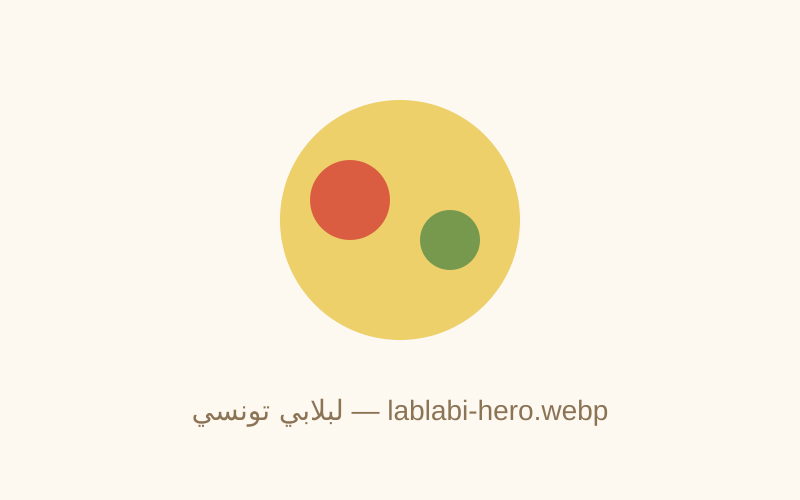

🧂 المكونات
- حمص مسلوق 400 غ
- خبزات فرنسية أو خبز تونسي قديم 4
- بيضات مسلوقة 4
- طماطم مفرومة 2 حبات
- فلفل حار (حارّة) مفروم 1 حبة
- هريسة 4 ملاعق كبيرة
- زيت زيتون 4 ملاعق
- كمون 1 ملعقة
- ملح وفلفل أسود حسب الذوق
- بقدونس وكزبرة للتزيين حفنة
- زيتون أسود (اختياري) حسب الذوق
- تونة معلبة (اختياري) 1 علبة
👨🍳 خطوات التحضير
- سخّن الحمص في قدر مع شوية ماء وملح وكمون — اهرسه شوية باش يولي كريمي.
- قطّع الخبز لمكعبات صغيرة، حمّره في الفرن (180°) أو المقلاية باش يولي مقرمش ودهبي.
- سلّق البيض 8 دقائق، قشّره وقطّعه أنصاف.
- في طبق عميق: حطّ طبقة حمص، فوقها خبز مقرمش، فوقها طماطم وفلفل حار.
- زيّن ببيض، هريسة، زيت زيتون، بقدونس وكزبرة. زيد تونة وزيتون إذا تحب.
- قدّمها سخونة — كلّها بالملعقة واخلط كل شي!
💬 تعليقاتكم